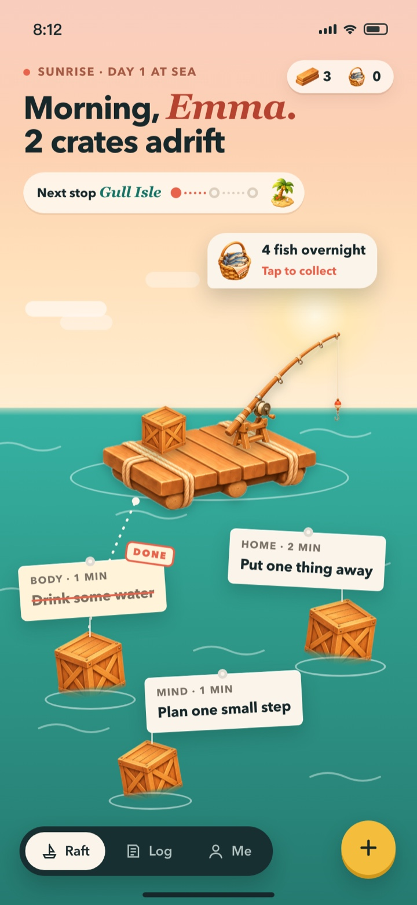
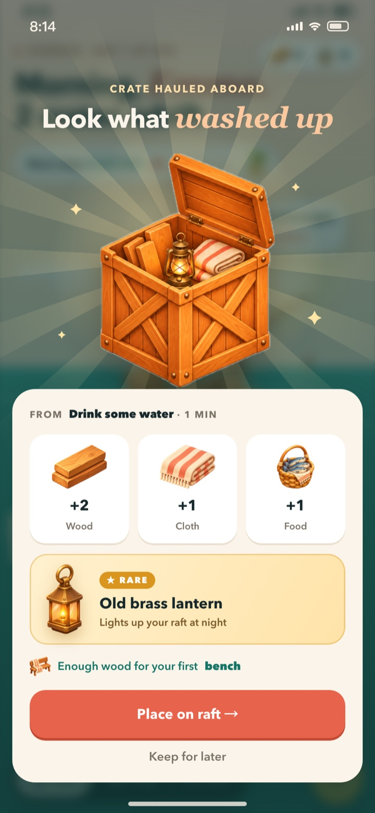
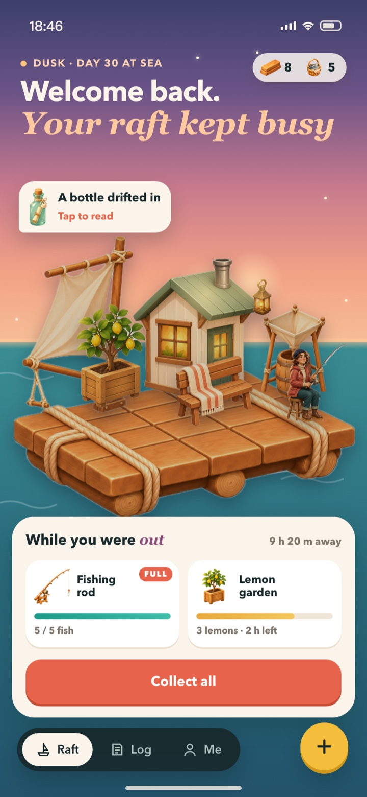

Pick one small thing
Drink a glass of water. Put one thing away. Read half a page. Two minutes, not two hours.
A cozy habit raft
Do one tiny thing. A crate drifts in. Your raft grows a little every day — even on the days you barely have anything left.

Less pressure. More small wins.
The ritual
Most habit apps ask for streaks, graphs and willpower. Cozy Raft asks for one small thing — and gives you something calm to come back to.
There is no perfect day to protect. The sea keeps moving, and so do you.
Drink a glass of water. Put one thing away. Read half a page. Two minutes, not two hours.
A crate floats in and opens: wood, cloth, scraps — and every now and then, something rare.
Build a bench, a sail, a small cabin. Then sail on to Gull Isle, Lantern Key and Driftwood Bay.
What's aboard
No red badges. No guilt. Just a quiet place to notice the small things you already do, and a raft that remembers them.
Every task is sized for a real day. If something feels too big, Raft Pass splits it into little steps.
Sunrise, daylight, sunset, night — the sky changes around your raft, and every win adds something to it.
One quiet reminder at a time you choose. Miss a day and nothing breaks; your raft simply waits.
Steps, water and mindful minutes can tick a task off for you. Health data is read on your iPhone and stays there.
Now and then the tide brings a note — a small nudge, a kind word, nothing more.
Seven little wins and the map opens up. Four shores, one slow voyage, no rush to arrive.
A look inside
Designed to feel like a place, not a dashboard. Every screen is made to be glanced at and put down.


Raft Pass
Cozy Raft is complete without it. Raft Pass is for the people who want more to build, more to explore, and help turning a mountain into pebbles.
Plans, prices, billing periods and any free trial are shown in the app before you confirm. Subscriptions renew automatically until cancelled in your Apple account. See the Terms of Use for the full billing terms.
One membership, every shore. Restore it on any iPhone signed in to the same Apple account.
Private by design
No account, no profile, no cloud copy of your day. Cozy Raft keeps your habits and your progress on your device.
Read the privacy policyGood to know
Anything else, write to us. A real person reads every message.
Yes. The daily raft, the crates, the log, the map's first shores and Apple Health all work without paying. Raft Pass is an optional subscription for extra places to build and the task-splitting tool.
No. There is no sign-up, no email required and no password to remember. Your raft is stored on your iPhone, so keep a device backup if you want to carry it to a new phone.
Nothing breaks. There is no streak to lose and no shame screen. When you come back, the raft is where you left it and today's crates are waiting.
If you connect it, Cozy Raft reads steps, water and mindful minutes you choose to share, and ticks off the tasks you linked to them. You can disconnect at any time in Settings or the Health app. Health data is never sent to us.
Subscriptions are managed by Apple, not by us. Open your Apple subscription settings and cancel there. You keep access until the end of the paid period. Deleting the app does not cancel a subscription.
Cozy Raft is built for iPhone with iOS 17 or later. It is designed in portrait, with a widget and a Live Activity for the task timer.
Contact
Questions, bugs, or a kind word about your raft — all welcome. We usually reply within two business days.
Cozy Raft is made by an independent developer. For purchases and refunds, Apple handles your App Store account.